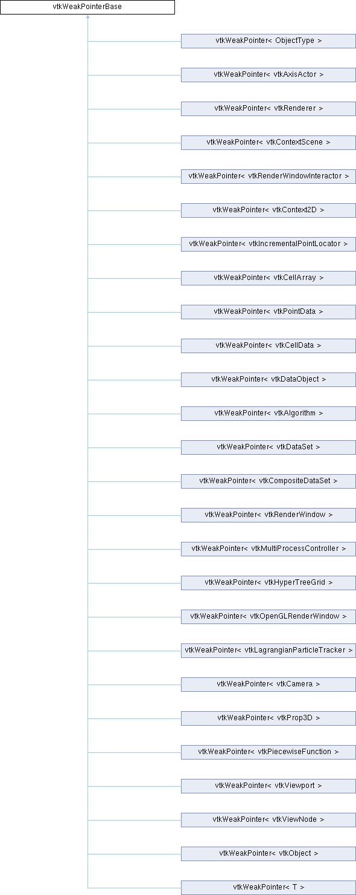

|
Etrek
|
|
Etrek
|
Non-templated superclass for vtkWeakPointer. More...
#include <vtkWeakPointerBase.h>

Classes | |
| class | NoReference |
Public Member Functions | |
| vtkWeakPointerBase () noexcept | |
| vtkWeakPointerBase (vtkObjectBase *r) | |
| vtkWeakPointerBase (const vtkWeakPointerBase &r) | |
| vtkWeakPointerBase (vtkWeakPointerBase &&r) noexcept | |
| ~vtkWeakPointerBase () | |
| vtkObjectBase * | GetPointer () const |
| vtkWeakPointerBase & | operator= (vtkObjectBase *r) |
| vtkWeakPointerBase & | operator= (const vtkWeakPointerBase &r) |
| vtkWeakPointerBase & | operator= (vtkWeakPointerBase &&r) noexcept |
Protected Member Functions | |
| vtkWeakPointerBase (vtkObjectBase *r, const NoReference &) | |
Protected Attributes | |
| vtkObjectBase * | Object |
Friends | |
| class | vtkObjectBaseToWeakPointerBaseFriendship |
Non-templated superclass for vtkWeakPointer.
vtkWeakPointerBase holds a pointer to a vtkObjectBase or subclass instance, but it never affects the reference count of the vtkObjectBase. However, when the vtkObjectBase referred to is destroyed, the pointer gets initialized to nullptr, thus avoid dangling references.
|
inlinenoexcept |
Initialize smart pointer to nullptr.
| vtkWeakPointerBase::vtkWeakPointerBase | ( | vtkObjectBase * | r | ) |
Initialize smart pointer to given object.
| vtkWeakPointerBase::vtkWeakPointerBase | ( | const vtkWeakPointerBase & | r | ) |
Copy r's data object into the new weak pointer.
|
noexcept |
Move r's object into the new weak pointer, setting r to nullptr.
| vtkWeakPointerBase::~vtkWeakPointerBase | ( | ) |
Destroy smart pointer.
|
inline |
Get the contained pointer.
| vtkWeakPointerBase & vtkWeakPointerBase::operator= | ( | vtkObjectBase * | r | ) |
Assign object to reference. This removes any reference to an old object.